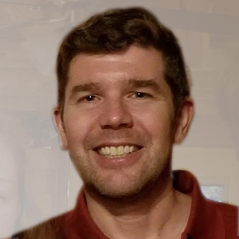
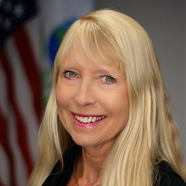

Our Team

Dr. Wesley Ingwersen, US Environmental Protection Agency
Dr. Wesley Ingwersen has served as an Environmental Engineer in the US EPA’s Office of Research and Development since 2010, developing methods, models, and tools for life cycle assessment and materials management. He co-led an international guidance document on product category rules. Dr. Ingwersen helped establish the Technical Working Group for the federal LCA Commons initiative and the Global Network of LCA databases. He has served as the technical expert on LCA for the US Department of State. Dr. Ingwersen obtained M.S. and Ph.D. degrees from the University of Florida a B.A. from Georgetown University. He leads the development of the GA model.

Loren Heyns, Georgia Department of Economic Development
Loren Heyns is a Computational Science and Civil and Environmental Engineering Ph.D. student at Georgia Tech, Programmer Analyst at the Georgia Department of Economic Development (GDEcD) and founder of DreamStudio. Loren's programming background includes data-driven websites for Georgia State Parks, CNN, Green Law, Southeast Environmental Education and Georgia directories for Aerospace, Trade, Logistics and Camera Ready film sites. Loren's undergraduate degrees are in Communication Studies and Business Economics from UC Santa Barbara. Loren also studied Telecommunications and Interactive Design at Michigan State University's Comm Tech Lab.
Dr. Valerie Thomas, Georgia Institute of Technology
Dr. Valerie Thomas is the Anderson Interface Professor of Natural Systems in the School of Industrial and Systems Engineering at Georgia Tech, with a joint appointment in the School of Public Policy. Her research includes bioenergy development, focusing on economics and environmental impacts, including Sustainable Production of Fuels and Chemicals from Biomass Through 2019 she was a member of the USDA-DOE Biomass R&D Technical Advisory Committee. Before Georgia Tech she worked at Princeton University and Carnegie Mellon University, and has served as a Congressional Science Fellow. She has a PhD in high energy physics from Cornell and a B.A. in physics from Swarthmore. 
Costas Simoglou, Georgia Department of Economic Development
Costas Simoglou is the Director of the Georgia Center of Innovation for Energy Technology. His mission is to help Georgia’s companies accelerate the development of new products, ideas and business models in the Energy ecosystem and maintain the State’s leadership position in the fields of energy generation, transmission, distribution, storage and consumption.
Dawn Price, Georgia Department of Economic Development
Dawn M. Price works with the Georgia Department of Economic Development on the Centers of Innovation team. She is an Industry Engagement Manager for both the Center for Energy Technology and Center for Information Technology. She is focused on building relationships and strengthening Georgia’s industry ecosystems and local business climates.Nazanin Tabatabaei, Georgia Insitute of Technology
Nazanin is a Ph.D. student at Georgia Tech majoring in Computational Design with a focus on Machine Learning with a minor in Human-Computer Interaction and a Masters in Computer Science. She holds a Masters of Science in Digital Design and Fabrication from Texas Tech University, and a Bachelors of Architecture degree from the University of Tehran. Her work intertwines computer science, computational media, and tangible interactions. Nazanin's portfolioYilun Zha, Georgia Insitute of Technology
Yilun Zha is a Ph.D. student at Georgia Institute of Technology with majors in Urban Design and Statistics. His research interest lies in the interplay between public health and the built environment, especially the impact of urban form on general wellbeing of the public. Prior to joining Georgia Tech, he obtained bachelor and master degree in city planning from Tongji University, Shanghai. He also earned a master degree in urban design from Georgia Tech.Cindy Giselle Azuero Pedraza, Georgia Insitute of Technology
Cindy Azuero is a PhD student at the H. Milton School of Industrial and Systems Engineering in the Economic Decision Analysis track with a minor in Environmental Economics. Her research interests are in applications of economic and engineering tools including optimization, econometrics and simulation to environmental problems, which include biodiversity conservation, forests and climate change. Current research projects include the impacts in biodiversity of wood pellet production in Southeastern U.S and the rural economic development impacts of biofuels.
